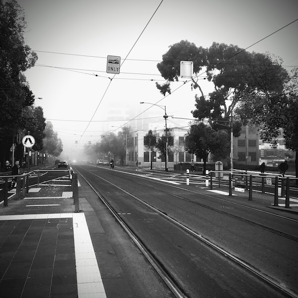

Hi, I'm Clarence. I'm a software engineering student at Monash University in Melbourne, originating from Penang, Malaysia.


Please stop asking me to make my personal site multi-paged.
My love of music goes far. Here's a page dedicated to my collection of monthly playlists.
You can see past iterations of my personal website below.